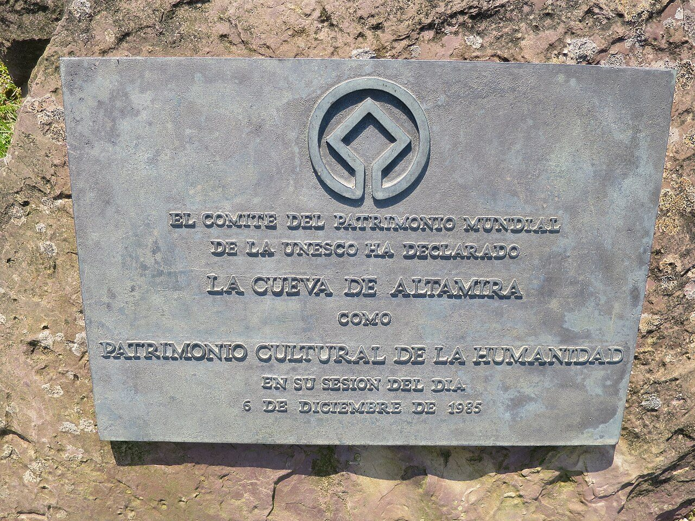

Qué es el Patrimonio de la Humanidad
Criterios: PC 3.1, PC 7.1, PC 8.2
🤔 Pienso5 min
Qué hago aquí: Piensa un momento y contesta con lo que ya sabes. No pasa nada si no lo sabes: es para empezar.
¿Qué tienen en común las pirámides de Egipto, la Gran Muralla china y la cueva de Altamira?
📖 Leo y aprendo15 min
Qué hago aquí: Lee despacio, mira los dibujos y los ejemplos, y quédate con la idea clave del final.
El Patrimonio de la Humanidad es una lista de lugares de valor excepcional para todo el mundo. La elabora la Unesco, la organización de las Naciones Unidas para la educación, la ciencia y la cultura, desde que en 1972 los países firmaron un acuerdo (la Convención del Patrimonio Mundial). Hay más de mil lugares en la lista.

Foto: Reinhard Dietrich · CC BY-SA 4.0 · Altamira UNESCO-Plakette.JPG
Ser Patrimonio de la Humanidad es un orgullo y trae turismo, pero sobre todo es una responsabilidad: el país se compromete a conservar el bien. Si no lo hace, puede entrar en la lista del patrimonio en peligro.
✏️ Hago25 min
Qué hago aquí: Haz las actividades en orden. Empieza siempre por las básicas.
Explica qué es el Patrimonio de la Humanidad, quién lo decide y qué compromiso adquiere un país cuando un bien entra en la lista.
Clasifica en cultural, natural, mixto o inmaterial y justifica: Altamira, los Picos de Europa, una fiesta tradicional, un paisaje con terrazas de cultivo antiguas.
Explica en una línea del tiempo cómo ha crecido la presencia de Cantabria en la lista de la Unesco desde 1985.
Explica por qué ser Patrimonio de la Humanidad trae turismo y por qué ese turismo puede convertirse en un riesgo para el propio bien.
Elige un elemento del patrimonio de Cantabria que no esté en la lista (un paisaje, una fiesta, un oficio…) y redacta su candidatura: qué es, por qué tiene valor excepcional y cómo se protegería.
¿Qué significa entrar en la lista del patrimonio en peligro? Busca un ejemplo de algún lugar del mundo que esté en ella y explica por qué.
Compara la Lista de la Unesco con la Lista Roja de Hispania Nostra: quién la hace, qué recoge y para qué sirve cada una.
🚀 Amplío (si quieres saber más)
Qué hago aquí: ¿Has terminado? Lee la curiosidad o elige el reto. Es voluntario.
Busca en la Lista Roja del Patrimonio un monumento de Cantabria. Explica su historia, por qué está en peligro y propón un plan de rescate con tres medidas y quién debería pagarlas (Administración, propietarios, vecinos, empresas).
✅ Compruebo5 min
Qué hago aquí: Contesta sin mirar la ficha y marca cómo lo llevas.